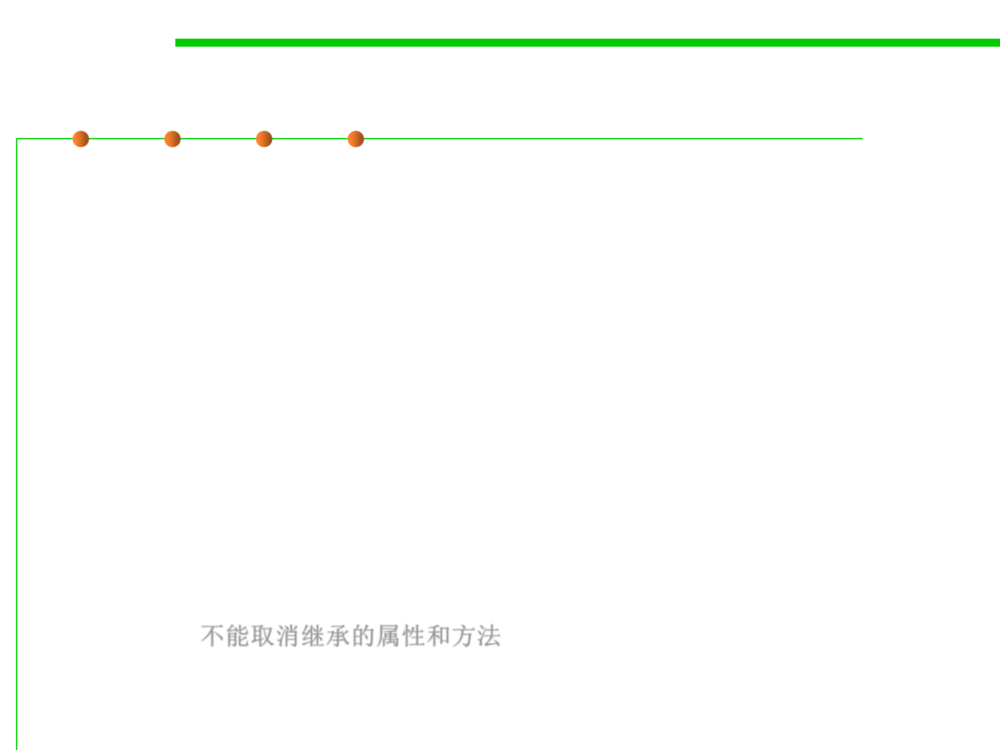

5.1 Metrics, Morphology and External Observations of Reusability
Approaches of reusing a class: inheritance
▪ Java provides a way of code reuse named Inheritance
▪ In inheritance, classes extend the properties/behavior of existing
classes
▪ In addition, they might override/redefine existing behavior
▪ No need to put dummy methods that just forward or delegate work(
虚拟方法：通过调用或者转发实现功能的方法)
▪ Captures the real world better
▪ Usually need to design inheritance hierarchy before implementation
▪ Cannot cancel out properties or methods, so must be careful not to
overdo it 不能取消继承的属性和方法